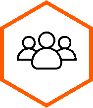

Śniadanie technologiczno-biznesowe
Zapewnij ciągłość działania
biznesu dzięki technologiom AWS
biznesu dzięki technologiom AWS

9 czerwca 2022

Godz: 09:30

Ogrody Wisła ul. Wioślarska 8, 00-411 Warszawa
Rozwiązania cloud to najlepszy sposób, aby poradzić sobie z aktualnymi wyzwaniami w świecie biznesu.
Dowiedz się więcej i skorzystaj z ekskluzywnej oferty wsparcia od AWS.
Zapraszamy na śniadanie biznesowo-technologiczne zorganizowane przez ekspertów Billennium.
W programie:

UDZIAŁ W DYSKUSJI Z CLOUDOWYMI
PRZEDSTAWICIELAMI AWS I BILLENNIUM
UNIKATOWE OFERTY WSPARCIA
W PRZEJŚCIU DO CHMURY
KONSULTACJE Z EKSPERTAMI
BILLENNIUM, AWS I FORTINET
MOŻLIWOŚĆ UMÓWIENIA SIĘ NA
INDYWIDULANE BEZPŁATNE WARSZTATY
W DOWOLNYM TERMINIE
Zapraszamy! To jedyna taka okazja. Limit miejsc jest ograniczony*
Fakty:

40 UCZESTNIKÓW
5 PRELEGENTÓW
FORMAT - ONSITE
CATERING
|
9:00 - 9:30
|
Śniadanie
|
|
09:30 - 09:45
|
Otwarcie spotkania
 Tomasz Osipiak – Head of Partnership w Billennium
Tomasz Osipiak – Head of Partnership w Billennium
|
|
09:45 - 10:30
|
DRC czyli jak zabezpieczyć organizację przed utratą danych?
Piotr Boetzel - Solutions Architect w AWS
|
|
10:30 - 11:00
|
Jak ochronić zasoby klienta bez ograniczania czy spowalniania procesu migracji do chmury publicznej?
Piotr Nowotarski - Consulting System Engineer - Public Cloud EMEA w Fortinet
|
|
11:00 - 11:15
|
Przerwa na kawę
|
|
11:15 - 12:00
|
Debata
Michał Halagiera – Chief Growth Officer w Billennium
Tomasz Olejnik – General Manager Public Sector w CEE w AWS
Piotr Nowotarski - Consulting System Engineer - Public Cloud EMEA w Fortinet
Tomasz Osipiak – Head of Partnership w Billennium
|
|
12:00 - 12:25
|
Dlaczego warto skorzystać z kompleksowych programów wsparcia
klienta w migracji do chmury od AWS?
Łukasz Stypułkowski -Channel Executive w Billennium
Krzysztof Charszla - Partner Development Manager CEE Public Sector w AWS
|
|
12:25 - 12:30
|
Podsumowanie spotkania
Tomasz Osipiak – Head of Partnership w Billennium
|
|
12:30 - 13:00
|
Lunch
|
Dowiedz się więcej o AWS Migration Acceleration Program (MAP)
Dołącz do programu!
Program przygotowany przez specjalistów Amazon Web Services, który wspiera organizacje z całego świata w migracji do chmury publicznej. Doświadczenie AWS w tysiącach wdrożeń pozwalapomagać kolejnym organizacjom w aspektach technologicznych i finansowych migracji, gwaratując sukces projektów oraz minimalizując wszelkie ich ryzyko.
Program od niedawna jest dostępny również w Polsce, co pozwala również organizacjomz naszego kraju korzystać z wszelkich benefitów tego narzędzia.
Formularz rejestracyjny